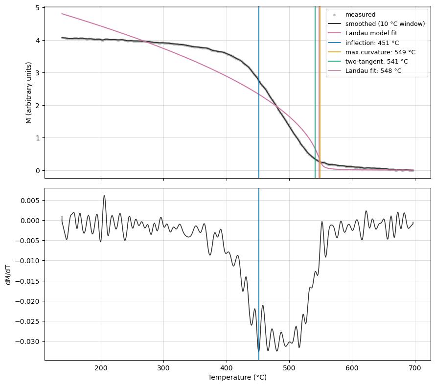
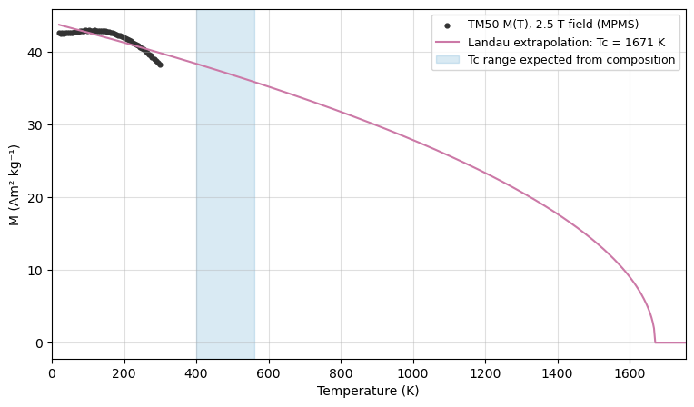
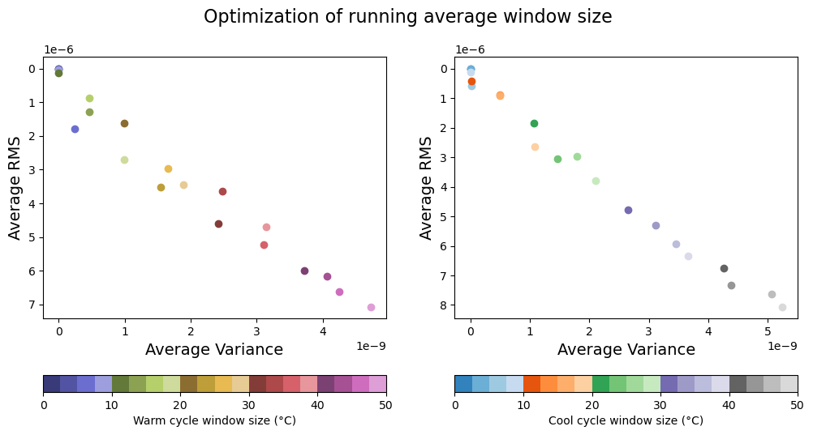
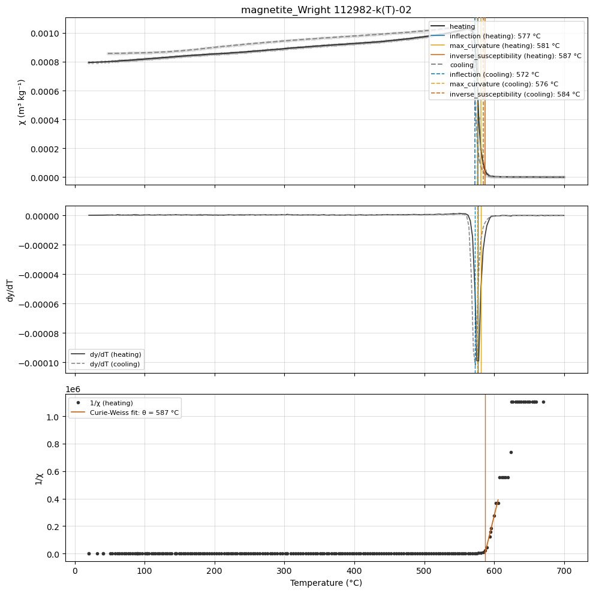
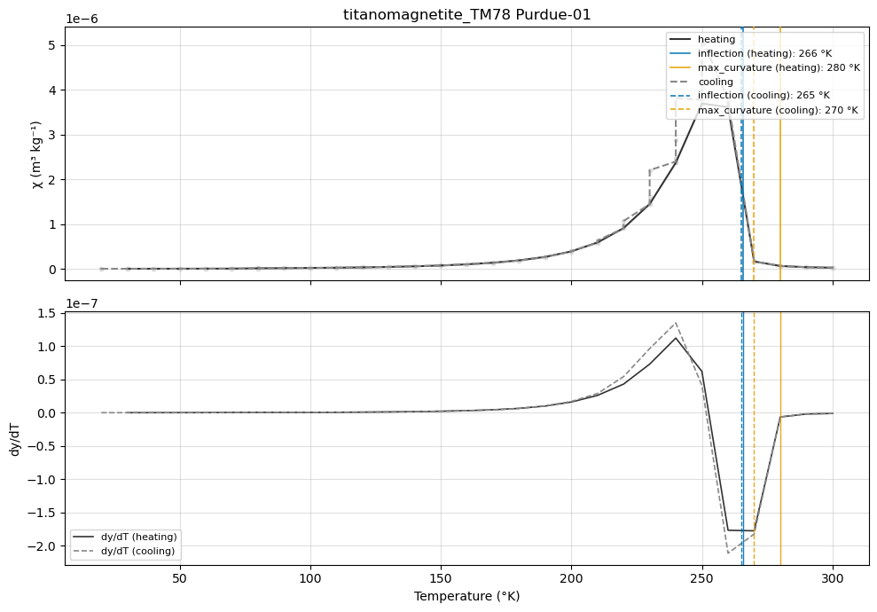

Curie temperature estimation#
The Curie temperature (T\(_c\)) is the temperature at which a ferromagnetic (sensu lato) mineral undergoes the transition to a paramagnetic state. Because T\(_c\) varies systematically with composition within solid-solution series such as the titanomagnetites, it is one of the most diagnostic rock magnetic parameters for magnetic mineralogy. However, estimates of T\(_c\) from thermomagnetic data are method-dependent and data-type-dependent, with systematic offsets of several to tens of degrees between methods applied to the same curve (Lattard et al., 2006; Fabian et al., 2013). This notebook demonstrates the estimation methods implemented in rockmag.py, their physical basis, and the caveats that attend each of them.
Method overview#
The analysis of Fabian et al. (2013), grounded in the Landau theory of second-order phase transitions with an explicit field term, provides the framework. For a magnetization curve M(T) measured in an applied field, the Curie temperature corresponds to the inflection point of the curve (the minimum of dM/dT), a position that is effectively independent of the applied field. The classical estimators — the maximum curvature method (“the temperature at which the curvature of the concave part of the heating curve is a maximum”; Ade-Hall et al., 1965) and the two-tangent method of Grommé et al. (1969) — coincide with each other and lie systematically above the inflection-point T\(_c\), typically by 10–15 °C, with the offset increasing with field strength.
Low-field susceptibility \(\chi\)(T) requires separate treatment. At least four physical processes contribute to the initial susceptibility near the ordering temperature (variation of M\(_s\) with field, rotation against anisotropy, domain-wall motion, and superparamagnetism), so the shape of \(\chi\)(T) near T\(_c\) is strongly grain-size dependent, and a Hopkinson peak marks the blocking temperature rather than T\(_c\). For \(\chi\)(T) data, Petrovský and Kapička (2006) showed that the two-tangent method is not physically justified and can considerably overestimate T\(_c\); they advocate the inverse susceptibility approach, in which 1/\(\chi\) above the transition is extrapolated to zero via the Curie-Weiss law — with the caveat that this yields the paramagnetic Curie temperature \(\theta \geq\) T\(_c\).
method |
intended data |
what it locates |
key caveat |
|---|---|---|---|
|
in-field M(T) |
T\(_c\) (Landau theory) |
requires smoothing; derivatives amplify noise |
|
M(T) |
practical T\(_c\) of Ade-Hall et al. (1965) |
above inflection-point T\(_c\) by ~10–15 °C; field-dependent |
|
M(T) |
graphical “knee” (Grommé et al., 1969) |
coincides with max curvature; not justified on \(\chi\)(T) |
|
\(\chi\)(T) |
paramagnetic Curie temperature \(\theta\) |
\(\theta \geq\) T\(_c\); sensitive to the fitting window |
|
in-field M(T) |
T\(_c\) with formal uncertainty (Fabian et al., 2013) |
single phase near its transition; extrapolation degrades far below T\(_c\) |
All of these are available through individual functions (rmag.curie_derivative_estimates, rmag.curie_two_tangent, rmag.curie_inverse_susceptibility, rmag.curie_landau_fit) that operate on plain temperature/magnetization arrays, and through the wrapper rmag.curie_temperature_estimates that takes a MagIC-formatted experiment DataFrame and returns a tidy comparison table.
Install and import packages#
import numpy as np
import pandas as pd
import matplotlib.pyplot as plt
import pmagpy.rockmag as rmag
import pmagpy.ipmag as ipmag
import pmagpy.contribution_builder as cb
from bokeh.io import output_notebook, show
output_notebook(hide_banner=True)
Import data#
The examples in this notebook use data from the Rock Magnetic Bestiary contribution to the MagIC database that includes measurements on synthetic magnetite, titanomagnetite, and maghemite samples. We follow the approach of the rockmag_data_unpack.ipynb notebook to bring the MagIC data into the notebook as a contribution.
# define these three parameters to match your data
magic_id = '20354'
share_key = '2f33e164-df55-4548-8d28-5b715683ae43'
dir_path = 'example_data/titanomagnetite'
result, magic_file = ipmag.download_magic_from_id(magic_id, directory=dir_path, share_key=share_key)
ipmag.unpack_magic(magic_file, dir_path, print_progress=False)
contribution = cb.Contribution(dir_path)
measurements = contribution.tables['measurements'].df
experiments = rmag.make_experiment_df(measurements)
Download successful. File saved to: example_data/titanomagnetite/magic_contribution_20354.txt
1 records written to file /Users/hematite/Documents/GitHub/RockmagPy-notebooks/thermomagnetic_notebooks/example_data/titanomagnetite/contribution.txt
2 records written to file /Users/hematite/Documents/GitHub/RockmagPy-notebooks/thermomagnetic_notebooks/example_data/titanomagnetite/locations.txt
2 records written to file /Users/hematite/Documents/GitHub/RockmagPy-notebooks/thermomagnetic_notebooks/example_data/titanomagnetite/sites.txt
43 records written to file /Users/hematite/Documents/GitHub/RockmagPy-notebooks/thermomagnetic_notebooks/example_data/titanomagnetite/samples.txt
201 records written to file /Users/hematite/Documents/GitHub/RockmagPy-notebooks/thermomagnetic_notebooks/example_data/titanomagnetite/specimens.txt
92035 records written to file /Users/hematite/Documents/GitHub/RockmagPy-notebooks/thermomagnetic_notebooks/example_data/titanomagnetite/measurements.txt
-I- Using online data model
-I- Getting method codes from earthref.org
-I- Importing controlled vocabularies from https://earthref.org
Part 1: Curie temperature from magnetization M(T) data#
Strong-field thermomagnetic curves — from a Curie balance or a vibrating sample magnetometer (VSM) — measure the induced magnetization through the transition and are the preferred data type for quantitative T\(_c\) estimation. The per-method estimator functions operate on plain arrays, so data from any acquisition stream can be analyzed. Here we use a classic Curie balance heating curve that has long shipped with PmagPy as curie_example.dat (a plain two-column temperature/magnetization file), which allows direct comparison with the legacy ipmag.curie function.
T, M = np.loadtxt('../example_data/curie/curie_example.dat', unpack=True)
# smooth with a 10 degree moving window prior to differentiation
sT, sM = rmag.smooth_moving_avg(T, M, 10)
derivative_result = rmag.curie_derivative_estimates(sT, sM)
two_tangent_result = rmag.curie_two_tangent(sT, sM)
landau_result = rmag.curie_landau_fit(sT, sM, temp_unit='C')
print(f"inflection point: {derivative_result['inflection_temp']:.1f} °C")
print(f"maximum curvature: {derivative_result['max_curvature_temp']:.1f} °C")
print(f"two-tangent: {two_tangent_result['curie_temp']:.1f} °C")
print(f"Landau fit: {landau_result['curie_temp']:.1f} ± {landau_result['curie_temp_stderr']:.1f} °C (h = {landau_result['params']['h']:.2e})")
inflection point: 451.4 °C
maximum curvature: 549.2 °C
two-tangent: 541.2 °C
Landau fit: 547.8 ± 2.4 °C (h = 1.56e-04)
fig, (ax1, ax2) = plt.subplots(2, 1, figsize=(9, 8), sharex=True)
ax1.scatter(T, M, s=6, color='#bbbbbb', label='measured')
ax1.plot(sT, sM, color='#333333', lw=1.5, label='smoothed (10 °C window)')
ax1.plot(landau_result['diagnostics']['model_T'], landau_result['diagnostics']['model_M'],
color='#CC79A7', lw=1.5, label='Landau model fit')
for temp, label, color in [
(derivative_result['inflection_temp'], 'inflection', '#0072B2'),
(derivative_result['max_curvature_temp'], 'max curvature', '#E69F00'),
(two_tangent_result['curie_temp'], 'two-tangent', '#009E73'),
(landau_result['curie_temp'], 'Landau fit', '#CC79A7')]:
ax1.axvline(temp, color=color, lw=1.2, label=f'{label}: {temp:.0f} °C')
ax1.set_ylabel('M (arbitrary units)')
ax1.legend(fontsize=9)
d = derivative_result['diagnostics']
ax2.plot(d['T'], d['dy_dT'], color='#333333', lw=1.2)
ax2.axvline(derivative_result['inflection_temp'], color='#0072B2', lw=1.2)
ax2.set_xlabel('Temperature (°C)')
ax2.set_ylabel('dM/dT')
for ax in (ax1, ax2):
ax.grid(alpha=0.4)
plt.tight_layout();

Interpreting the spread of estimates#
The four estimates span nearly 100 °C, and the spread itself is informative. The two-tangent (~541 °C), maximum-curvature (~549 °C), and Landau-fit (~548 °C) estimates cluster near the “knee” of the curve, while the inflection point (minimum of dM/dT, ~451 °C) sits well below it. For an ideal single-phase sample these estimates would differ by only 10–15 °C with a strict ordering (inflection \(\leq\) Landau < max curvature \(\approx\) two-tangent). The much larger spread here is consistent with a distribution of Curie temperatures in this natural sample (e.g., variable titanium substitution): a T\(_c\) distribution drags the steepest descent of the aggregate curve toward the low-T\(_c\) tail, while the knee — where the last ferromagnetic contribution vanishes — traces the upper end of the distribution (Fabian et al., 2013). Comparing methods therefore provides a diagnostic of sample homogeneity that no single estimate conveys.
For reference, the legacy ipmag.curie function (second-derivative maximum after Bartlett smoothing on a resampled 1 °C grid) yields 552 °C on this file with the same window — consistent with the max_curvature estimate here (~549 °C), which supersedes it.
Part 2: Extrapolating M(T) curves that end below T\(_c\)#
MPMS instruments measure in-field magnetization only up to 300–400 K, so for minerals with higher Curie temperatures the measured curve ends well below T\(_c\). Moskowitz (1981) proposed estimating T\(_c\) from data acquired entirely below the transition by extrapolating a Landau-theory magnetization model — an approach developed for titanomaghemites that invert during heating (so that only the pre-inversion, low-temperature data reflect the original phase). The rmag.curie_landau_fit function operates in this extrapolation mode automatically when the data end below the fitted T\(_c\), and flags it in the output.
The critical caveat: the reliability of the extrapolation decays rapidly with the distance between the highest measured temperature and T\(_c\). The Landau/mean-field form \(M \propto \sqrt{1 - T/T_c}\) describes the critical region near the transition; far below T\(_c\), the true decrease of M\(_s\)(T) is governed by spin-wave excitations with a different (much flatter) temperature dependence, and fitting the critical form to such data biases T\(_c\) high — badly. The in-field M(T) curve for the TM50 titanomagnetite from the Rock Magnetic Bestiary (measured 20–300 K in the MPMS, thus reaching only ~60% of the expected T\(_c \approx\) 480 K for this composition; Lattard et al., 2006) demonstrates the failure mode.
tm50_experiment = measurements[measurements['experiment'] ==
'titanomagnetite_TM50 NC-01-LP-MST-DC-9746'].reset_index(drop=True)
# this run was measured during cooling from 300 K to 20 K; remove_holder is
# disabled because the curve never reaches the paramagnetic state
tm50_branches = rmag.prepare_thermomag_branches(tm50_experiment, magnetic_column='magn_mass',
temp_unit='K', remove_holder=False)
T_tm50, M_tm50 = tm50_branches['cooling']['T'], tm50_branches['cooling']['y']
tm50_fit = rmag.curie_landau_fit(T_tm50, M_tm50, temp_unit='K')
print(f"extrapolated Tc: {tm50_fit['curie_temp']:.0f} ± {tm50_fit['curie_temp_stderr']:.0f} K")
print(f"extrapolation: {tm50_fit['params']['extrapolation']}")
print(f"expected Tc for TM50 (Lattard et al., 2006 calibration): ~480 K")
extrapolated Tc: 1671 ± 10637 K
extrapolation: True
expected Tc for TM50 (Lattard et al., 2006 calibration): ~480 K
fig, ax = plt.subplots(figsize=(9, 5))
ax.scatter(T_tm50, M_tm50, s=12, color='#333333', label='TM50 M(T), 2.5 T field (MPMS)')
ax.plot(tm50_fit['diagnostics']['model_T'], tm50_fit['diagnostics']['model_M'],
color='#CC79A7', lw=1.5, label=f"Landau extrapolation: Tc = {tm50_fit['curie_temp']:.0f} K")
ax.axvspan(400, 560, color='#0072B2', alpha=0.15,
label='Tc range expected from composition')
ax.set_xlabel('Temperature (K)')
ax.set_ylabel('M (Am² kg⁻¹)')
ax.set_xlim(0, min(tm50_fit['curie_temp'] * 1.05, 1800))
ax.legend(fontsize=9)
ax.grid(alpha=0.4);

The fit extrapolates to a T\(_c\) near 1700 K — more than a thousand kelvin above the value expected from the TM50 composition — and the formal uncertainty (± thousands of K) correctly signals that T\(_c\) is unconstrained by these data. Because the measured 20–300 K interval samples the spin-wave regime rather than the critical regime, the curve contains almost no curvature toward the transition, and the parameters (M\(_0\), T\(_c\), h) trade off along a ridge. The same exercise with the SkySpring maghemite (T\(_c \approx\) 918 K, so the data reach only ~33% of T\(_c\)) fails at least as badly. The practical guidance is that Landau/Moskowitz extrapolation should be reserved for curves that approach the transition closely (as in the inversion-limited titanomaghemite curves for which Moskowitz devised it), and that an extrapolated T\(_c\) should never be reported without its uncertainty and the temperature of the highest fitted datum.
Part 3: Curie temperature from susceptibility \(\chi\)(T) data#
High-temperature susceptibility (χ-T) curves measured on a Kappabridge pass fully through the transition and are the most common thermomagnetic data type. As laid out in the method overview, the shape of \(\chi\)(T) near T\(_c\) convolves several susceptibility mechanisms, so estimates from \(\chi\)(T) require more care than those from M(T). Here we analyze the χ-T curve for a synthetic magnetite (Wright Company sample 112982) from the Rock Magnetic Bestiary.
Choosing a smoothing window#
Derivative-based estimators amplify measurement noise, so the data are smoothed with a temperature-space moving window prior to differentiation. The choice of window width trades noise reduction against distortion of the curve; rmag.optimize_moving_average_window sweeps window widths and plots the residual roughness (average RMS) against the within-window variance so that a window at the “knee” of the trade-off can be chosen. For these data a ~10 °C window is a reasonable choice.
selected_experiment = measurements[measurements['experiment'] ==
'IRM-KappaF-LP-X-T-3410'].reset_index(drop=True)
fig, axs = rmag.optimize_moving_average_window(selected_experiment, min_temp_window=0,
max_temp_window=50, steps=20)

Choosing the Curie-Weiss fitting window: resolution matters#
The Curie-Weiss fit must be restricted to temperatures where the signal is fully paramagnetic and still resolved by the instrument. Above the transition the holder-corrected susceptibility of this specimen collapses rapidly toward the measurement resolution of the Kappabridge: by ~625 °C the signal is pinned at the last one or two counts of the meter, producing flat quantized plateaus in 1/\(\chi\). Including such resolution-limited points flattens the fitted slope and biases \(\theta\) low. A naive wide window demonstrates the failure — and the function detects it:
heating = rmag.prepare_thermomag_branches(selected_experiment, smooth_window=10)['heating']
naive_fit = rmag.curie_inverse_susceptibility(heating['T'], heating['y'], fit_range=(600, 700))
print(f"theta (600-700 °C window): {naive_fit['curie_temp']:.1f} ± {naive_fit['curie_temp_stderr']:.1f} °C")
print(f"warning: {naive_fit['params']['warning']}")
theta (600-700 °C window): 564.6 ± 9.3 °C
warning: 92% of the fitted points repeat identical susceptibility values (weak, resolution-limited signal); theta is likely biased low — tighten fit_range or set min_chi
The naive window returns \(\theta \approx\) 565 °C — below the inflection-point estimate of the Curie temperature. Since theory requires \(\theta \geq\) T\(_c\), a Curie-Weiss \(\theta\) that falls below an independent T\(_c\) estimate is itself a red flag that the fit is contaminated. Restricting the window to the interval where 1/\(\chi\) is linear and the signal remains resolved above the quantization floor (here 585–606 °C, where the susceptibility stays above ~6 instrument counts) recovers a fit that is both statistically better and physically consistent.
Estimates from all methods, with the comparison table#
rmag.curie_temperature_estimates applies the requested methods to the heating and cooling branches and returns a tidy DataFrame. For susceptibility data the default methods are inflection, max_curvature, and inverse_susceptibility. The Curie-Weiss fit window is set explicitly — the window is part of the analysis and should be reported alongside the estimate.
curie_estimates = rmag.curie_temperature_estimates(
selected_experiment,
smooth_window=10,
method_kwargs={'inverse_susceptibility': {'fit_range': (585, 606)}},
)
curie_estimates[['branch', 'method', 'curie_temp', 'curie_temp_stderr', 'temp_unit', 'notes']]
| branch | method | curie_temp | curie_temp_stderr | temp_unit | notes | |
|---|---|---|---|---|---|---|
| 0 | heating | inflection | 576.674623 | NaN | C | inflection point (minimum of dy/dT); for in-fi... |
| 1 | heating | max_curvature | 580.950000 | NaN | C | maximum of d2y/dT2 (Ade-Hall et al., 1965; leg... |
| 2 | heating | inverse_susceptibility | 586.795836 | 0.740622 | C | Curie-Weiss extrapolation of 1/chi; yields the... |
| 3 | cooling | inflection | 572.164202 | NaN | C | inflection point (minimum of dy/dT); for in-fi... |
| 4 | cooling | max_curvature | 575.750000 | NaN | C | maximum of d2y/dT2 (Ade-Hall et al., 1965; leg... |
| 5 | cooling | inverse_susceptibility | 584.067157 | 1.399497 | C | Curie-Weiss extrapolation of 1/chi; yields the... |
rmag.plot_curie_estimates(
selected_experiment,
smooth_window=10,
method_kwargs={'inverse_susceptibility': {'fit_range': (585, 606)}},
figsize=(10, 10),
);

The heating-branch inflection (~577 °C) and maximum-curvature (~581 °C) estimates bracket the accepted magnetite Curie temperature of 580 °C. The steep, step-like decrease of \(\chi\)(T) at the transition in a (near-)multidomain magnetite is dominated by the loss of the self-demagnetization-limited susceptibility plateau, and for such curves the derivative-based estimates on the descending step are close to T\(_c\) (Fabian et al., 2013). The Curie-Weiss fit over the resolved 585–606 °C interval yields \(\theta \approx\) 587 ± 1 °C, consistent with the requirement \(\theta \geq\) T\(_c\) and with \(\theta\) exceeding T\(_c\) by several degrees for a ferrimagnet. The cooling-branch estimates differ from the heating branch by a few degrees; larger heating-cooling differences (irreversibility) signal alteration of the magnetic mineralogy during heating, in which case the cooling branch reflects the altered assemblage, not the original one.
The two-tangent construction on \(\chi\)(T): shown only to be discouraged#
Requesting two_tangent on susceptibility data attaches the caveat to the output. On this curve the two-tangent intersection lands close to the derivative estimates because the transition is sharp, but on curves with a pronounced Hopkinson peak or a rounded transition it can overestimate T\(_c\) considerably (Petrovský and Kapička, 2006) — and there is no physical justification for it on low-field susceptibility even when it happens to agree.
two_tangent_chi = rmag.curie_temperature_estimates(
selected_experiment, methods=('two_tangent',), smooth_window=10)
two_tangent_chi[['branch', 'method', 'curie_temp', 'notes']]
| branch | method | curie_temp | notes | |
|---|---|---|---|---|
| 0 | heating | two_tangent | 582.824211 | two-tangent intersection on susceptibility is ... |
| 1 | cooling | two_tangent | 577.993777 | two-tangent intersection on susceptibility is ... |
Interactive Curie-Weiss fitting#
The draggable fit tool below helps identify the temperature interval over which 1/\(\chi\) is linear (i.e., where the signal is fully paramagnetic): drag the two endpoints and the extrapolated \(\theta\) updates live. This tool is for exploration; for reported values, feed the interval identified here to curie_inverse_susceptibility (or the method_kwargs of curie_temperature_estimates) so the fit is reproducible.
rmag.interactive_curie_inverse_susceptibility(
selected_experiment,
smooth_window=10,
initial_fit_range=(585, 606),
)
A Curie transition inside the MPMS window: titanomagnetite TM78#
For titanomagnetite compositions with x \(\gtrsim\) 0.75, the Curie temperature falls below room temperature, and the entire transition is captured by low-temperature MPMS susceptibility measurements. The TM78 sample from the Rock Magnetic Bestiary shows the susceptibility rising through a Hopkinson-like peak and collapsing near 265 K. The same estimator functions apply — only the temperature range differs.
tm78_experiment = measurements[(measurements['experiment'] ==
'IRM-OldBlue-LP-X:LP-X-T:LP-X-F:LP-X-H-9764')].reset_index(drop=True)
# use the 1 Hz in-phase susceptibility
tm78_1hz = tm78_experiment[np.isclose(tm78_experiment['meas_freq'].astype(float), 1.0)].reset_index(drop=True)
tm78_estimates = rmag.curie_temperature_estimates(
tm78_1hz, temp_unit='K', methods=('inflection', 'max_curvature'), remove_holder=False)
tm78_estimates[['branch', 'method', 'curie_temp', 'temp_unit']]
| branch | method | curie_temp | temp_unit | |
|---|---|---|---|---|
| 0 | heating | inflection | 265.842734 | K |
| 1 | heating | max_curvature | 280.000000 | K |
| 2 | cooling | inflection | 265.212490 | K |
| 3 | cooling | max_curvature | 270.000000 | K |
rmag.plot_curie_estimates(tm78_1hz, temp_unit='K', methods=('inflection', 'max_curvature'),
remove_holder=False, figsize=(10, 7));

Part 4: Archiving the estimate in a MagIC specimens table#
The MagIC data model stores critical temperatures in the specimens table: critical_temp (in kelvin) with critical_temp_type from the controlled vocabulary (here 'Curie'). rmag.add_curie_estimates_to_specimens_table writes the chosen estimate and records the estimation method, branch, and uncertainty in the description column, so that the processing choice is archived with the result.
specimens = contribution.tables['specimens'].df.reset_index(drop=True)
rmag.add_curie_estimates_to_specimens_table(
specimens,
experiment_name='IRM-KappaF-LP-X-T-3410',
estimates=curie_estimates,
method='inflection',
branch='heating',
)
specimens[specimens['specimen'] == 'magnetite_Wright 112982-k(T)-02'][
['specimen', 'experiments', 'critical_temp', 'critical_temp_type', 'description']]
| specimen | experiments | critical_temp | critical_temp_type | description | |
|---|---|---|---|---|---|
| 59 | magnetite_Wright 112982-k(T)-02 | NaN | 849.824623 | Curie | {'curie_method': 'inflection', 'curie_branch':... |
| 193 | magnetite_Wright 112982-k(T)-02 | IRM-KappaF-3410 | 849.824623 | Curie | {'curie_method': 'inflection', 'curie_branch':... |
| 194 | magnetite_Wright 112982-k(T)-02 | IRM-KappaF-3410 | 849.824623 | Curie | {'curie_method': 'inflection', 'curie_branch':... |
Summary#
Curie temperature estimates are method-dependent; report the method (and any smoothing/fitting windows) with the value.
For in-field M(T) curves: the inflection point is the physically grounded estimate; maximum-curvature and two-tangent values run systematically high; the Landau fit adds a formal uncertainty.
For \(\chi\)(T) curves: derivative-based estimates on the descending step and the inverse-susceptibility (Curie-Weiss) extrapolation are appropriate; the two-tangent construction is not; and \(\theta\) from 1/\(\chi\) is an upper bound on T\(_c\).
Extrapolating curves that end below T\(_c\) is defensible only when the data approach the transition closely; otherwise the estimate is unconstrained, as the formal uncertainty makes explicit.
Comparing estimates across methods (and between heating and cooling branches) is itself diagnostic — of T\(_c\) distributions, alteration, and data quality.
References#
Ade-Hall, J., Wilson, R., and Smith, P. (1965), The petrology, Curie points and natural magnetizations of basic lavas, Geophysical Journal International, 9, 323-336.
Fabian, K., Shcherbakov, V. P., and McEnroe, S. A. (2013), Measuring the Curie temperature, Geochemistry, Geophysics, Geosystems, 14, 947-961, doi:10.1029/2012GC004440.
Grommé, C. S., Wright, T. L., and Peck, D. L. (1969), Magnetic properties and oxidation of iron-titanium oxide minerals in Alae and Makaopuhi lava lakes, Hawaii, Journal of Geophysical Research, 74, 5277-5294, doi:10.1029/JB074i022p05277.
Lattard, D., Engelmann, R., Kontny, A., and Sauerzapf, U. (2006), Curie temperatures of synthetic titanomagnetites in the Fe-Ti-O system: Effects of composition, crystal chemistry, and thermomagnetic methods, Journal of Geophysical Research, 111, B12S28, doi:10.1029/2006JB004591.
Moskowitz, B. M. (1981), Methods for estimating Curie temperatures of titanomaghemites from experimental Js-T data, Earth and Planetary Science Letters, 53, 84-88, doi:10.1016/0012-821X(81)90028-5.
Petrovský, E., and Kapička, A. (2006), On determination of the Curie point from thermomagnetic curves, Journal of Geophysical Research, 111, B12S27, doi:10.1029/2006JB004507.